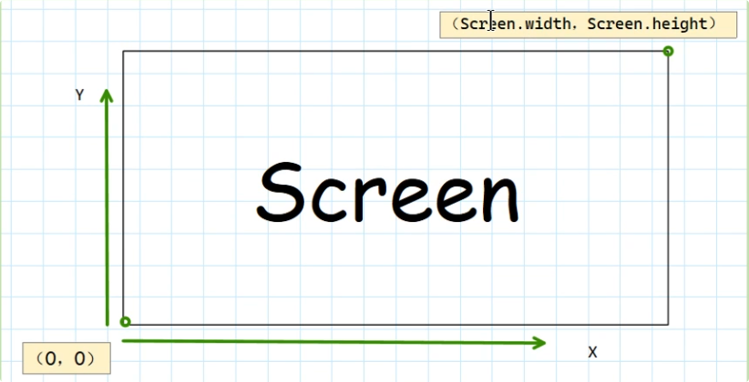
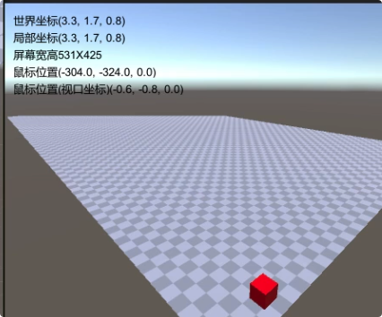

Unity 学习笔记 0 - 动机 & 环境 & 坐标系 & 生命周期函数
0. 动机
进入 5 月份之后各种各样的新闻很多，其中特别吸人眼球的无外乎苹果刚出的 Vision Pro 眼镜。作为半个果粉自然是心向往之，这次更甚，居然萌生了参与其中开发的想法。顿时感觉仿佛发现了一片蓝海，进入了另一条赛道。（毕竟直到 7 月份底为止一直没有人拿到真机进行测试开发，更何况进行 VR 应用的开发呢。想当年 iphone 刚出时，各种各样的应用层出不穷，苹果开发者趋之若鹜，早入行者也捞了不知几桶金了。闲话说到这，那和 Unity 有什么关系呢？
主要原因在于苹果这次官宣和 Unity 进行合作来开发运行在 Vision Pro 上的 3D 应用，据我了解目前行业里只有 Unreal Engine 和 Untiy 两家 3D 引擎公司独大，这次合作无异于宣布了未来 Unity 可能成为未来 3D 应用开发的主流。虽然目前谷歌以及 Meta 售卖的 AR 眼镜并没有绑定某个平台进行创作，更多的是开放自己的 SDK 后由开发者后期来做集成。之前只是听过 UE4 的大名，了解业内用其制作了挺多的仿真器和游戏模拟以及影视创作，但 Unity 的应用却没有听说多少。而且 Unity 是使用 C# 开发，这也是一直劝退我的原因。
抱着试试看的态度，快速过完了苹果发布的 Vision Pro 的开发教程，然后迅速安装了 Unity ，在我的 Macbook Pro 2019 上。安装时确实有点犹豫，看过一些分享和评论说 Unity 很吃显卡性能。但想到只是试试看，目前顶多开发一个 2D 游戏玩玩看，应该也用不了多少性能。目前看起来也确实，只有运行时候风扇会疯狂转，其余时间还是挺安静的。当然，有条件还是建议配 Windows 开发吧，一步到位比较好。
1. 环境
关于 Unity 最新版在 MacBook 上的安装配置，实测并没有踩多少坑，所以这里也不展开记录了。我这边是先安装的 Unity Hub，然后登录用户选择 Unity 版本之后自动进行安装。整个安装完空间大约要要 20G 左右吧，仅最基本的配置。
安装完成后的开发，网上绝大多数以及官方建议都是使用 VS 来进行，使用了几天没有感觉什么不适，联调也挺方便。不过因为长期使用 VS Code 的关系，更倾向于使用它来进行开发。从网上查找了一些资料，按照步骤安装了一些插件之后，基本实现了协同开发。在 VS Code 下进行代码编写之后，跳转到 Unity 下会自动加载代码，然后直接运行即可。唯一不适的可能是 Unity 中关键词的高亮和提示，比如 transform 之类。虽然安装了相关插件但仍然存在无法高亮的问题，无奈先暂时放下。
2. 基本实现
对于入门学习，我选择了 B 站上一门 2D 坦克大战小游戏的制作来开始，见参考链接 1。老师讲得的很耐心，废话不多很直接，手把手实现了游戏基本功能的所有逻辑，使用 C# 编写脚本。课程也提供了相应的图片和声音素材，制作过程中成就感还是蛮高的，能够了解和熟悉童年游戏的每一步实现，还是挺有意思的。里面具体实现细节不再一一展开，仅借整理笔记机会简单做下复盘记录📝相关思考后面方便查看。
a. 基本逻辑
制作游戏的第一步一般都是要先导入图片资源，同时合理地设置文件夹的目录结构。大致分为以下几个部分：
1 | . |
具体细节有太多文档可以查看，这里仅简单记录作为初学者我自己的理解和思考。在我跟的这个教程中，老师是从预制体（prefab）的制作开始，完成一个个预制体的功能之后，再在其上将他们组合成场景，简单说就是从微观到宏观。预制体应该是整个游戏制作中极其重要的部分，按照我的理解 Unity 游戏制作的根本就是构建和组合这些预制体从而完成目标功能。”游戏引擎“这个概念我也是学习过程中逐渐理解，直观上看 Unity 只是编排各种游戏素材和场景，但实际上每个游戏素材背后都是游戏引擎在支撑实现。举个最简单的例子🌰，坦克撞上墙，是不能直接穿过的，那其中的逻辑如何实现呢。这里可以引出 Unity 中最常见的 Box Collider 属性，它可以自动帮你执行碰撞检测（需要注意 2D 和 3D 的区别）。如下图所示
设想如果用纯 Python 来实现两个方形物体的碰撞检测，该有多复杂。同理如重力，弹跳以及武器击打，天气等，背后都有引擎在支撑实现。因此对于一个游戏来说，引擎的性能优劣直接影响到玩家的体验。
b. 坐标系
在开发过程中参考别人的代码来实现自己的功能，但对于坐标系变换终归不得其解，期间遇到一位好友一起交流意外被点醒理解了不少。在此基础之上参考链接 5 的视频进行整理汇总，才算是有了阶段性的成果吧，总结笔记如下。
首先 Unity 中只有如下四种坐标系，其他名称都是这四种坐标系的别名，这里把可能得叫法统一整理出来
- 世界坐标系（全局坐标、左手坐标、绝对坐标)
- 局部坐标系（物体坐标、本地坐标、相对坐标)
- 屏幕坐标系（像素坐标）
- 视口坐标系（视窗坐标）
- GUI坐标系
首先世界坐标系和局部坐标系，对于在 Scene 根目录下新建的任何 GameObject，当没有父物体时其世界坐标系和局部坐标系就是相同的，即其 Transform componet 的 Position 属性都是局部坐标。所以如果给它添加一个父物体，当父物体坐标位置发生改变时，是不会影响子物体的 Transform.Position 属性的，但子物体的世界坐标位置是受到父物体的影响的
其次来说屏幕坐标系，是长这个样子的

坐标系的原点位置位于屏幕的左下角，可以通过 Screen.width 和 Screen.height 来获取当前屏幕的宽高，其 x 和 y 的方向如图所示。另外，可以通过 Input.mousePosition 打印出当前鼠标位置，即鼠标位置是基于视口坐标系的。
再来说下视口坐标系(Viewport)，如下图可以看到，它其实是屏幕坐标系的归一化，这里不再细说，后面会提到其如何与屏幕坐标系之间进行变换。
最后来说下 GUI 坐标系，其实它主要是服务于 2D 平面下 GUI 组件的显示的，如添加显示框啊，文字啊等等。如可以通过如下代码来实现文字在 GUI 界面的显示（OnGUI()也是官方提供的，每次刷新一次）
1 | public Camera camera_; |

讲完了以上的几种坐标系，下面来说下如何实现他们之间彼此的转换。这里注意相关实现的 API 都要用官方提供的 Camera 类型来实现，即定义类似 public Camera camera_; 这样的变量来进行相关转换函数的调用。
世界和屏幕互转
- 屏幕转世界 ->
Camera.ScreenToViewportPoint(Vector3 Pos); - 世界转屏幕 ->
Camera.WorldToScreenPoint(Vector3 Pos);
世界和视口互转 - 世界转视口 ->
Camera.WorldToViewportPoint(Vector3 Pos); - 视口转世界 ->
Camera.ViewportToWorldPoint(Vector3 Pos);
屏幕和视口互转 - 屏幕转视口 ->
Camera.ScreenToViewportPoint(Vector3 Pos); - 视口转屏幕 ->
Camera.ViewportToScreenPoint(Vector3 Pos);
世界坐标与局部坐标互转 - 世界转局部 ->
transform.InverseTransformPoint(Vector3 Pos);或transform.worldToLocalMatrix - 局部转世界 ->
transform.TransformPoint(Vector3 Pos);或transform.localToworldMatrix
对于屏幕转世界补充下，由于屏幕的三维坐标系的 z 轴是没有值的，所以如果直接进行转换的话得到的值其实是相机的位置。举例如果想准确地把一个鼠标位置得到一个世界位置的话，必须赋予 z 轴深度才行，如果没有这个深度信息的话是无法将二维坐标映射到三维空间上的。
另外需要注意的是，自身坐标系并不是局部坐标系，自身坐标系是一个隐藏的东西，其实是相对于自身的一个坐标系，而局部坐标系是相对于父物体的。
c. 常用生命周期函数
主要参考链接 6 进行学习和记录笔记
一个脚本必须绑定在游戏对象上才能被调用，才能开始这个 GameObject 的生命周期，直到因为触发某个逻辑被销毁时才结束它的生命周期。期间可能依次调用了 Awake, Start, OnDestroy 等生命周期函数，也可能一直循环执行 Update 或 FixedUpdate 等生命周期函数。
常用的生命周期函数如下：
Reset()-> 此函数会在用户首次添加该组件时或单击 Component Reset 按钮时被调用，且只在编辑器生效。其常应用于在编辑器内通过代码大批量生成修改 GameObject，来代替手工操作。Awake()-> 此函数在脚本实例被载入时调用，仅被调用一次。Start()-> 在 Awake() 之后和 Update() 之前被调用，仅被调用一次；FixedUpdate()-> 物理更新函数，循环执行，0.02s 执行一次（不受 FPS 帧率影响，时间可更改），所以和物理相关的更新都应在此函数处理（比如刚体运动）；Update()-> 更新函数，每帧执行一次，受 FPS 帧率影响；LateUpdate()-> 稍后更新函数，在所有 Update 执行完后调用，帧间隔时间和 Update 一样；OnGUI()-> 在渲染和处理 GUI 事件时被调用，每帧都执行；OnEnable()-> 当脚本被启用时调用一次，当游戏对象被禁用时，仅监听响应此函数；OnDisable()-> 当脚本被禁用时调用一次，当脚本反复被禁用或启用，则反复调用 OnDisable 和 OnEnable;OnDestroy()-> 当脚本被销毁时被调用，只会在被激活的物体上调用；
对于这些生命周期函数之间的关系，在教程中只提到了如下三个区别
- Awake 和 Start 的区别：在同一个游戏场景中可能存在若干个 GameObject，若每个 GameObject 都存在 Awake 和 Start 函数时，必定先执行所有 GameObject 的 Awake 函数，然后再执行 Start 函数，此时执行顺序是乱序的。推荐使用 Awake 创建游戏对象，Start 来获取对象，这样可以保证不会空指针报错。
还有一点需要注意的是，Awake 函数是脚本作为 Component 添加之后就会被调用（载入），无论是否选中 Active。而 Start 函数只有脚本被实例化时才会被调用，也就是说脚本 Component 必须是 Active 状态时才会被执行。 - Update 和 FixedUpdate 的区别：不同机器甚至同一机器不同时刻每帧执行所用的时间都是不一样的，取决于机器性能等各种因素。因此在可以看到 Update 函数执行时间间隔并不是相同的，这样物体运动的动作会显的不稳定。而 FixedUpdate() 函数则于机器性能没有关系，执行的时间间隔是相同的，这对于刚体运动执行刷新来说尤为重要。
FixedUpdate 固定时间修改位置：Edit -> Project Setting -> Time -> Fixed TimeStep
最先执行的一定是 FixedUpdate，最后执行的一定是 LateUpdate. - 禁用、启用、销毁的区别：
- 物体被禁用时，Start 不会被执行，Awake 仍然会被执行。当物体反复禁用启用时，Awake 和 Start 也仅执行一次；
- OnEnable 和 OnDisable 随着游戏对象的禁用启用而被调用；
- 当程序退出时，若对象处于启用状态，则程序会先禁用(调用 OnDisable)，再销毁(调用 OnDestroy)；
参考链接
- 【siki学院】Unity3D - Unity基础案例-教你如何做一个你儿时肯定玩过的坦克大战游戏【已完结】_哔哩哔哩_bilibili
- Unity2D]坐标体系 - linzheng - 博客园 (cnblogs.com)
- Unity 中的旋转和方向 - Unity 手册 (unity3d.com)
- (152条消息) unity中的四元数，欧拉角，方向向量之间的相互转换方法。_转换欧拉角 向量_Mansutare的博客-CSDN博客
- 【详解Unity】各种坐标系 | 世界坐标 | 屏幕坐标 | UI坐标_哔哩哔哩_bilibili
- 【详解Unity】生命周期函数| Awake | Start | Update_哔哩哔哩_bilibili